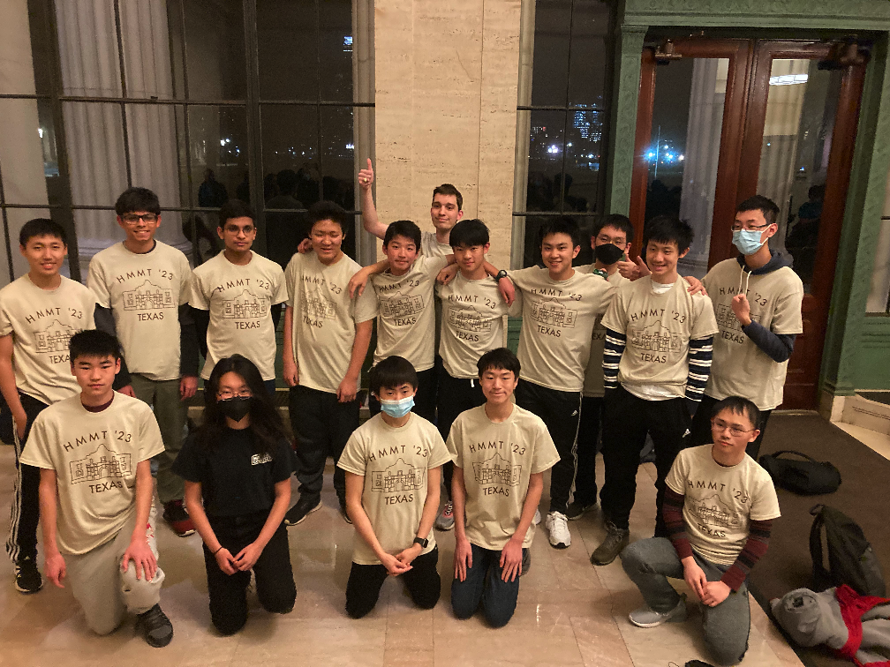

The Texas HMMT February 2023 Team
Texas A
Ryan Chin
Aaron Guo
Ethan Liu
Ray Tang
Rich Wang (Captain)
Aiden Wen
Dylan Yu
Ray Zhao
Texas B
Arnav Adhikari
Aryan Bora (Captain)
William Dai
Darren Han
Leo Yu
Chenxi Zhang
Sophia Zhong
Coaches and organizers
Matthew Kroesche
Rich Wang
Individual results
Ethan Liu placed 15th individually, 49th in Algebra/Number Theory, and 2nd in Geometry.
Aaron Guo placed 24th individually, 13th in Algebra/Number Theory, and 21st in Geometry.
Ray Tang placed 26th individually, 26th in Algebra/Number Theory, 24th in Geometry, and 49th in Combinatorics.
Ray Zhao placed 42nd individually and 23rd in Combinatorics.
Aiden Wen placed 10th in Algebra/Number Theory.
Ryan Chin placed 23rd in Combinatorics.
Darren Han and Dylan Yu both placed 40th in Geometry.
Team results
Texas A placed 5th in Sweepstakes, 12th in Team Round, and 3rd in Guts Round.
Texas B placed 19th in Sweepstakes, 13th in Team Round, and 25th in Guts Round.
Team photo

(Back to Main Page)